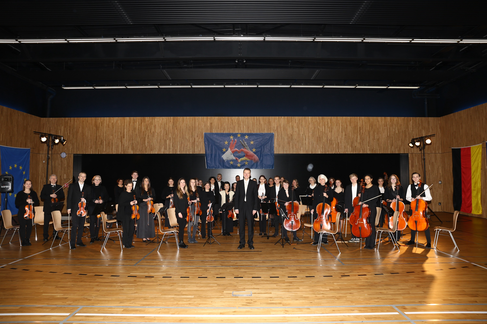
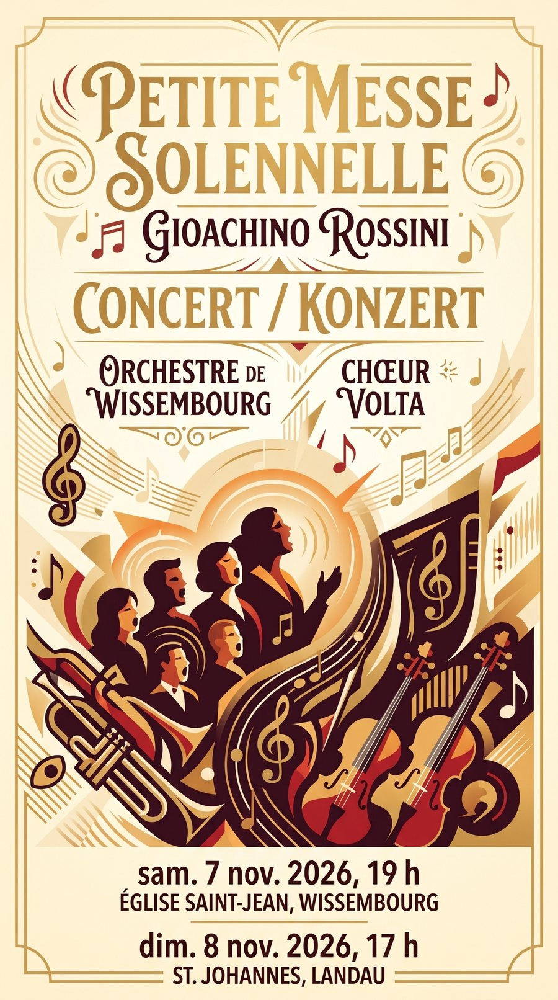

Przyjdź na koncert
Koncerty we Francji i w Niemczech przez cały sezon — w kościołach, salach i szkołach muzycznych Górnego Renu.
Zobacz kalendarz
Muzyka jest naszą pasją
Około pięćdziesięciu muzyków amatorów i zawodowców — Francuzów, Niemców i Polaków — w każdym wieku i z różnych środowisk, zjednoczonych pod dyrekcją Marca Bendera, by muzyka kameralna żyła po obu stronach Renu.

Na afiszu
W sobotę 7 listopada o godz. 19, w kościele Saint-Jean w Wissembourgu, orkiestra i Chór Volta wykonają Petite Messe solennelle Rossiniego; nazajutrz o godz. 17 w St. Johannes w Landau. Wstęp wolny, zbiórka na rzecz stowarzyszenia.
W wersji docelowej każdy koncert jest wpisem o określonej strukturze (data, godzina, miejsce, program, bilety): dzięki temu Google i kalendarze kulturalne mogą go zaindeksować, co przy zwykłym obrazku jest niemożliwe.
Zespół
Stowarzyszenie OCW powstało w 2013 roku z inicjatywy zaangażowanych uczniów, wspieranych przez oddanych nauczycieli.
Od 2021 roku, we współpracy ze szkołą muzyczną w Landau, zespół skupia dziś około pięćdziesięciu muzyków amatorów i zawodowców, w każdym wieku i z różnych środowisk, pod dyrekcją Marca Bendera.
Koncerty, trasy, partnerstwa z innymi międzynarodowymi szkołami muzycznymi: każdy projekt to okazja do rozwoju osobistego, kulturalnego i muzycznego — i źródło trwałych przyjaźni. W duchu Trójkąta Weimarskiego zespół dał koncerty trójnarodowe, łączące muzyków francuskich, niemieckich i polskich.
Auf Deutsch
Musik, eine universelle Sprache, über Grenzen hinweg! Der Verein OCW wurde 2013 auf Initiative motivierter Schülerinnen und Schüler gegründet.

Wyróżnienie
Nagroda Trójkąta Weimarskiego 2024 została przyznana projektowi Youth Europe Music przez stowarzyszenie Weimarer Dreieck, w obecności burmistrza miasta i premiera landu Bodo Ramelowa — to uznanie dla europejskiego zaangażowania orkiestry.
Włącz się
Koncerty we Francji i w Niemczech przez cały sezon — w kościołach, salach i szkołach muzycznych Górnego Renu.
Zobacz kalendarz
Grasz na instrumencie smyczkowym lub dętym, amatorsko albo zawodowo? Orkiestra przyjmuje nowych muzyków w każdym sezonie.
Napisz do nas
Osoby prywatne i firmy: darowizna daje prawo do ulgi podatkowej od 60 do 66 % (prawo francuskie) i finansuje nuty, transport oraz wynajem sal.
Wesprzyj nasWspierają nas
Serdecznie dziękujemy naszym sponsorom, dzięki którym każdy sezon koncertowy jest możliwy.


Newsletter
Otrzymuj program sezonu i przypomnienia o koncertach, dwa do czterech razy w roku. Wypisanie jednym kliknięciem, żadnych danych przekazywanych osobom trzecim.